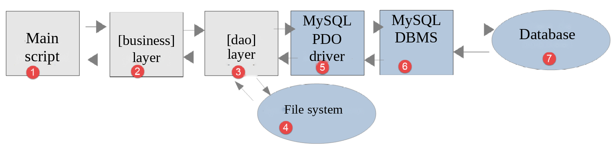

18. Ejercicio práctico – Versión 8
Retomaremos la aplicación de ejemplo (la versión 5 y su versión 7 configurada mediante el archivo JSON) y la convertiremos en una aplicación cliente/servidor. Esto nos permitirá poner en práctica lo aprendido en el capítulo anterior sobre servicios web.
18.1. Introducción
La arquitectura de la versión 5 era la siguiente:

- la capa llamada [dao] (Data Access Objects) gestiona las interacciones con la base de datos MySQL y con el sistema de archivos local;
- la capa llamada [business] realiza el cálculo del impuesto;
- El script principal actúa como orquestador: instancia las capas [dao] y [business], y luego se comunica con la capa [business] para realizar las tareas necesarias.
Vamos a migrar esta arquitectura a la siguiente arquitectura cliente/servidor:

- En [2], reutilizaremos la capa [dao] de la versión 5, eliminando los métodos que acceden al sistema de archivos local. Estos métodos se migrarán a la capa [dao] del cliente [6, 7];
- en [3], la capa [business] seguirá siendo la misma que en la versión 5, salvo su método [executeBatchTaxes], que se migra a las capas [business] y [8] del cliente;
- En [4], debe escribirse el script del servidor, que tendrá que:
- crear las capas [business], [dao] y [3, 2];
- comunicarse con el script cliente [5, 7];
- En [7], debe escribirse la capa [dao] del cliente:
- será un cliente HTTP del script de servidor [4, 5];
- adoptará los métodos de acceso al sistema de archivos local de la capa [dao] de la Versión 5;
- En [8], la capa [business] del cliente proporcionará los mismos métodos que la interfaz [InterfaceBusiness] de la Versión 5. Sin embargo, su implementación será diferente. En la versión 5, la capa [business] realizaba el cálculo del impuesto. Aquí, esta operación la realiza la capa [business] del servidor. Por lo tanto, la capa [business] del cliente recurrirá a las capas [dao] y [7] para comunicarse con el servidor y pedirle que calcule el impuesto;
- En [9], el script de consola tendrá que instanciar las capas del cliente [dao, business] y lanzar su ejecución.
El servidor es un script web: se encuentra en la carpeta [scripts-web/tax/version-08] y lo ejecuta el servidor Apache de [Laragon]. El cliente es un script de consola: se encuentra en la carpeta [scripts-console/tax/version-08] y se ejecuta en un terminal.
18.2. El servidor
Nos centramos en el lado del servidor de la aplicación.

Esta arquitectura se implementará con los siguientes archivos:
18.2.1. Entidades intercambiadas entre capas
Las entidades intercambiadas entre las capas son las de la versión 5: la excepción [TaxException], los datos de la administración tributaria [TaxAdminData], y la descripción de la base de datos [Database]. El servidor también utiliza la clase [Utilities] de la Versión 5, cuyo método [readJsonFile] utiliza la clase [Database]. El curso de PHP 7 copiaba estos archivos a la carpeta del servidor. Ahora los cargamos directamente desde la carpeta [scripts-console/tax/version-05]: así se garantiza que cada clase exista en una sola instancia, y cualquier corrección hecha en la versión 5 beneficia a todas las versiones que la utilizan.
18.2.2. La capa [dao]
La capa [dao] implementa la siguiente interfaz [InterfaceServerDao]:
- Línea 13: el método [getTaxAdminData] recupera los datos de la base de datos de la administración tributaria.
La interfaz [InterfaceServerDao] la implementa la siguiente clase [ServerDao]:
Este es el código de la clase [DaoTaxWithTaxAdminDataInDatabase] de la versión 5, presentada en el Capítulo 13, sin el rasgo [TraitDao] que proporcionaba los métodos de lectura y escritura de los archivos JSON de los contribuyentes. Los métodos privados [getBrackets] y [getConstants] que siguen (no reproducidos aquí) permanecen sin cambios. Solo hay una diferencia:
- línea 17: el atributo [taxAdminData] se declara como [protected] en lugar de [private]. La versión 9 derivará la clase [ServerDao], y la clase derivada debe poder inicializar este atributo. A partir de PHP 8.4, una clase derivada puede inicializar un atributo [readonly] heredado, siempre que no sea privado.
18.2.3. La capa [business]
La capa [business] implementa la siguiente interfaz [InterfaceServerBusiness]:
La interfaz [InterfaceServerBusiness] la implementa la siguiente clase [ServerBusiness]:
- Línea 9: la clase [ServerBusiness] es la clase [Business] de la versión 5 sin su método [executeBatchTaxes];
- línea 15: el constructor recibe una referencia a una capa [dao] de tipo [InterfaceServerDao];
- línea 26: el método [calculateTax] y los métodos privados que utiliza permanecen sin cambios. El algoritmo se trató y se explicó a partir de la Versión 1, y su versión orientada a objetos se aborda en el Capítulo 13.
18.2.4. El script del servidor
El script del servidor [tax-server.php] implementa las capas [web] y [4] . Se configura mediante los siguientes archivos JSON y [Data/config-server.json]:
- Línea 2: el archivo de configuración JSON de la base de datos MySQL. Es el archivo [database-mysql.json] de la versión 7. La carpeta [Data] también contiene el archivo [database-pgsql.json] para la base de datos PostgreSQL: basta con cambiar esta línea para que el servidor funcione con PostgreSQL;
- Líneas 3–12: los archivos PHP de la aplicación, cuyas rutas son relativas a la carpeta [version-08] del servidor. Los cuatro primeros son de la versión 5;
- líneas 13–18: la lista de usuarios autorizados a utilizar la aplicación.
Como en la versión 7, la clave [rootDirectory] ya no existe: el script calcula por sí mismo su carpeta raíz a partir de la constante [__DIR__]. Tampoco existe ya una clave [absoluteDependencies], que proporcionaba la ruta absoluta del archivo [vendor/autoload.php] de [Composer]: ahora se determina a partir de [__DIR__].
El archivo [config-server.json] se encuentra en la carpeta [Data] del servidor y, por lo tanto, dentro de la estructura de directorios del sitio web: sin tomar precauciones, cualquiera podría descargarlo con la URL [http://localhost/php8-oct-2026/scripts-web/tax/version-08/Data/config-server.json] y leer las credenciales de los usuarios. Lo mismo ocurre con el archivo [database-mysql.json], que contiene la contraseña de la base de datos. Por ello, la carpeta [Data] contiene un archivo llamado [.htaccess]:
Un archivo llamado [.htaccess] contiene directivas de configuración del servidor Apache que se aplican a la carpeta que lo contiene y a sus subcarpetas. La directiva [Require all denied] deniega el acceso a la carpeta: Apache responde con [403 Forbidden] a cualquier solicitud de un archivo de la carpeta [Data]. En cambio, el script PHP lee estos archivos desde el disco sin pasar por Apache y no se ve afectado.
El script [tax-server.php] implementa la capa [web] de la siguiente manera:
1 2 3 4 5 6 7 8 9 10 11 12 13 14 15 16 17 18 19 20 21 22 23 24 25 26 27 28 29 30 31 32 33 34 35 36 37 38 39 40 41 42 43 44 45 46 47 48 49 50 51 52 53 54 55 56 57 58 59 60 61 62 63 64 65 66 67 68 69 70 71 72 73 74 75 76 77 78 79 80 81 82 83 84 85 86 87 88 89 90 91 92 93 94 95 96 97 98 99 100 101 102 103 104 105 106 107 108 109 110 111 112 113 114 115 116 117 118 119 120 | |
Comentarios
- líneas 10–12: se declaran las clases de la biblioteca [HttpFoundation] que se utilizarán;
- Línea 15: el directorio raíz del servidor es el directorio del script;
- línea 20: se carga el archivo de configuración;
- Líneas 23–26: cargamos el cargador de clases de [Composer] y luego todos los archivos de la aplicación;
- línea 29: preparamos una respuesta JSON. La clase [JsonResponse] es una subclase de [Response]: su método [setData] codifica en JSON el arreglo que se le pasa y lo utiliza como cuerpo de la respuesta. También establece el encabezado HTTP [Content-Type: application/json];
- Línea 31: las opciones de la función [json_encode], que utiliza [setData]. Con [JSON_UNESCAPED_UNICODE], los caracteres acentuados no se codifican como [\uXXXX]. Con [JSON_PRESERVE_ZERO_FRACTION], la tasa de impuesto real [0.0] se escribe como [0.0] y no como [0]: el cliente la decodificará como un número de punto flotante (float) y no como un entero;
- líneas 36–37: recuperamos los identificadores enviados por el cliente, como en el capítulo anterior;
- líneas 39–43: verificamos que el usuario sea efectivamente uno de los usuarios autorizados. La función [array_any] (PHP 8.4) devuelve [true] si al menos un elemento del arreglo [$config["users"]] cumple la condición expresada por la función flecha que se le pasa. Reemplaza el bucle [while] del script PHP 7. Las contraseñas se comparan con [hash_equals];
- líneas 44–52: si no es así, se envía el código HTTP [401 Unauthorized], que indica que se ha denegado el acceso. Al recibir este código y el encabezado HTTP [WWW-Authenticate: Basic realm=…], los navegadores muestran una ventana de autenticación que solicita al usuario autenticarse;
- Línea 49: la respuesta JSON del servidor explica la causa del error. Todas las respuestas del servidor serán la cadena JSON de un arreglo [["response" => something]]. El script PHP 7 devolvía al cliente el nombre de usuario y la contraseña rechazados. Una contraseña nunca debe devolverse ni escribirse en registros: solo devolvemos el nombre de usuario;
- Líneas 56–88: verificamos la validez de la solicitud:
- una solicitud GET con exactamente tres parámetros;
- un parámetro [married] cuyo valor debe ser [yes] o [no];
- un parámetro [children], cuyo valor debe ser un entero >= 0;
- un parámetro [salary], cuyo valor debe ser un entero mayor o igual que 0;
- ningún otro parámetro;
- línea 59: cada vez que se detecta un error, se agrega un mensaje de error al arreglo [$errors];
- línea 65: el método [getString] del objeto [$request->query] devuelve el valor del parámetro como una cadena de caracteres;
- línea 72: los parámetros [children] y [salary] siguen la misma regla: se verifican en el mismo bucle. Sus valores, convertidos a enteros, se colocan en el arreglo [$values];
- línea 85: la función [array_diff] devuelve los nombres de los parámetros recibidos que no están en la lista [married, children, salary];
- línea 89: si se produce un error, se envía al cliente el código HTTP [400 Bad Request]. La respuesta JSON contiene la lista de errores;
- Líneas 99–104: a partir de este punto, la consulta ha sido validada. Ya pueden instanciarse las capas [dao, business]. Esta instanciación tiene un costo (lectura de la base de datos) y solo debe realizarse si se tiene la certeza de que la consulta es válida. La construcción de la capa [dao] puede lanzar una excepción de tipo [TaxException];
- líneas 106–108: el mensaje de error suele ser el del controlador PDO del DBMS. En Windows, a veces puede estar codificado en Windows-1252 en lugar de UTF-8. Ahora bien, la función [json_encode] solo acepta cadenas UTF-8: [JsonResponse] lanzaría entonces una excepción. La función [mb_check_encoding] verifica la codificación de la cadena, y la función [mb_convert_encoding] la convierte si es necesario. El script PHP 7 utilizaba la función [utf8_encode], que está obsoleta desde PHP 8.2;
- línea 111: si se produjo una excepción, se envía al cliente el código HTTP [500 Internal Server Error]. Este código indica que el servidor no pudo procesar una solicitud válida. La respuesta explica la causa del error;
- línea 117: el cálculo del impuesto se delega a la capa [business];
- Líneas 119–120: se envía la respuesta, con el código de estado predeterminado [200 OK].
Probemos este script. En un navegador, solicite la URL [http://localhost/php8-oct-2026/scripts-web/tax/version-08/tax-server.php?married=yes&children=2&salary=55555]. El navegador muestra su ventana de autenticación, donde se ingresa [admin] y [admin]. Luego muestra la respuesta del servidor: JSON. Si el servidor rechaza estas credenciales, consulte la sección "Cuando el servidor siempre responde con 401" en el capítulo anterior.
18.2.4.1. ¿Por qué [http] y no [https]?
El cliente envía sus credenciales: en rigor, la URL debería estar protegida ([https]), como vimos en el capítulo anterior. Pero los navegadores modernos ([Chrome], [Edge], [Firefox]) solo aceptarán una página HTTPS si el certificado del servidor lo emite una entidad de certificación en la que confían. El certificado que [Laragon] genera para [localhost] es autofirmado: nadie lo garantiza. Según la versión del navegador y el estado de su caché, el navegador muestra una advertencia con un enlace ([Proceed to localhost (unsafe)]) o se niega a cargar la página sin ofrecer la opción de continuar. Esto ocurre cuando el navegador ha registrado que [localhost] debe servirse siempre con un certificado válido (mecanismo HSTS), o cuando considera que el certificado no es conforme. Las soluciones descritas en el capítulo anterior (agregar el certificado de [Laragon] al almacén de certificados de [Windows], eliminar la regla HSTS) no siempre son suficientes.
Por lo tanto, utilizamos la URL no segura [http://localhost/...] en el navegador. Aquí esto no es una falla de seguridad: una solicitud a [localhost] nunca sale de la máquina (pasa por la interfaz de red interna, conocida como interfaz de "loopback"), y ningún software espía puede interceptarla en la red. Por cierto, los navegadores web lo saben: tratan [http://localhost] como un origen de confianza. En cambio, en cuanto el servidor es accesible desde la red, y sobre todo en un entorno de producción, el protocolo HTTPS es indispensable, junto con un certificado válido emitido por una entidad reconocida (por ejemplo, de forma gratuita, por [Let's Encrypt]).
Sin embargo, los clientes que escribimos no son navegadores: el comando [curl] (opción [-k]) y el cliente Symfony [HttpClient] (opciones [verify_peer] hasta [false]) pueden aceptar el certificado autofirmado de [Laragon]. No obstante, esto requiere que el protocolo HTTPS se haya habilitado en [Laragon] (menú [Apache / SSL / Enabled]), lo cual no ocurre de forma predeterminada, y que este certificado sea utilizable en la máquina. Para que los ejemplos funcionen en cualquier instalación de [Laragon], utilizaremos por lo tanto la URL [http://localhost/...] en todo este capítulo y los siguientes: en el navegador, en los comandos [curl] y en los archivos de configuración del cliente (clave [urlServer]). Para pasar a HTTPS, basta con reemplazar [http] por [https] en estas URL y agregar la opción [-k] a los comandos [curl]: los archivos de configuración del cliente ya contienen las opciones necesarias [verify_peer] y [verify_host], que no tienen efecto cuando se utilizan con [http]. Los resultados son los mismos con ambos esquemas.
Ejecutemos la misma consulta con [curl]. Los caracteres no ASCII de una URL deben codificarse: por ejemplo, el carácter [é] se codifica como [%C3%A9] (sus dos bytes en UTF-8). Un navegador realiza esta codificación por sí mismo:
- línea 2: el código [200 OK];
- línea 8: el encabezado HTTP [Content-Type: application/json] definido por la clase [JsonResponse];
- Línea 10: la respuesta JSON del servidor.
Sin credenciales (sin la opción [-u]), se devuelve el código [401 Unauthorized]:
Ejecutemos algunas pruebas de error. Solicitamos la URL [http://localhost/php8-oct-2026/scripts-web/tax/version-08/tax-server.php?married=x&children=x&salary=x&w=x]:
Una solicitud POST sin parámetros (opción [-X POST] de [curl]):
Ahora simulemos una falla del DBMS. Podemos detener MySQL desde la ventana de [Laragon]. En su lugar, cambiamos la entrada DSN del archivo [database-mysql.json] por [mysql:host=127.0.0.1;port=3307;dbname=dbtaxes-2019;charset=utf8mb4]: ningún DBMS escucha en el puerto 3307 y la conexión es rechazada, igual que si MySQL estuviera detenido:
- línea 2: el código [500 Internal Server Error];
- línea 10: el mensaje de la excepción [TaxException] lanzada por la capa [dao]. En Windows, el mensaje del controlador está en francés: [Aucune connexion n'a pu être établie car l'ordinateur cible l'a expressément refusée].
Luego, restaure el DSN original.
18.2.5. Pruebas con [PHPUnit]
Cada vez que construimos una nueva versión del servidor, probaremos las capas [dao] y [business], como se ha hecho desde la versión 4. Estas pruebas no pasan por el servidor web: construyen las capas [dao] y [business] igual que el script del servidor y las prueban directamente. Se encuentran en la carpeta [Tests] del servidor. El curso de PHP 7 usaba el framework de pruebas [Codeception]; nosotros usamos [PHPUnit], como en los capítulos anteriores.
18.2.5.1. Pruebas de la capa [dao]
La prueba [Tests/ServerDaoTest.php] es la siguiente:
Comentarios
- Líneas 23–31: configuramos el mismo entorno de trabajo que en el script del servidor [tax-server.php]: lectura del archivo de configuración y carga de los archivos de la aplicación. No es necesario cargar el cargador de clases de [Composer] : [PHPUnit] ya lo ha hecho;
- Línea 37: creamos una instancia de la capa [dao] que se va a probar, igual que se hace en el script del servidor;
- A partir de aquí, las condiciones son las mismas que en el script del servidor: el resto del método [testTaxAdminData], no reproducido aquí, es igual al de la prueba [DaoTest] de las versiones 5 a 7.
18.2.5.2. Pruebas de la capa [business]
La prueba [Tests/ServerBusinessTest.php] es la siguiente:
Comentarios
- líneas 28–36: configuramos el mismo entorno de trabajo que en el script del servidor;
- Líneas 40–44: antes de cada prueba, se crea una instancia de la capa [business] que se va a probar, como se hace en el script del servidor;
- El resto de la prueba, no reproducido aquí, es igual al de la prueba [BusinessTest] de las versiones 4 a 7: un proveedor de datos [taxpayers] que contiene los 11 contribuyentes de la tabla de cifras oficiales y el método [testCalculateTax].
Los resultados de la prueba son los siguientes (el DBMS MySQL debe estar en ejecución):
18.3. El cliente
Nos centramos en el lado cliente de la aplicación.

Esta arquitectura se implementará con los siguientes archivos:
18.3.1. Entidades intercambiadas entre capas
Las entidades del cliente ya se han descrito y se usan desde la versión 5:
- la excepción [TaxException];
- los datos del contribuyente [TaxPayerData].
Al igual que el servidor, el cliente las carga desde la carpeta de la versión 5, junto con la clase [Utilities] y el trait [TraitDao].
18.3.2. La capa [dao]
La capa [dao] implementa la siguiente interfaz [InterfaceClientDao]:
- Línea 15: el método [getTaxPayersData] carga en memoria los datos de los contribuyentes desde el archivo JSON [$taxPayersFilename]. Si hay errores, se registran en el archivo JSON [$errorsFilename];
- línea 19: el método [calculateTax] calcula el impuesto de un contribuyente;
- línea 23: el método [saveResults] guarda los datos de la tabla [$taxPayersData]—que representa los resultados de varios cálculos de impuestos—en el archivo [$resultsFilename].
Los métodos [getTaxPayersData] y [saveResults] forman parte de la interfaz [InterfaceDao] de la versión 5. La interfaz [InterfaceClientDao] es implementada por la siguiente clase [ClientDao]:
Comentarios
- línea 17: insertamos el trait [TraitDao] de la versión 5, que implementa los métodos [getTaxPayersData] y [saveResults]. Solo queda por implementar el método [calculateTax];
- línea 20: el cliente HTTP de [Symfony], del tipo de la interfaz [HttpClientInterface];
- líneas 26–30: el constructor de la clase [ClientDao] recibe tres parámetros:
- la URL [$urlServer] del servidor de cálculo de impuestos. Es un parámetro promovido a atributo (constructor property promotion);
- el arreglo [$user] con las claves [login] y [passwd], que define al usuario que realiza las solicitudes. El atributo [#[\SensitiveParameter]] (PHP 8.2) indica a PHP que oculte el valor de este parámetro en los seguimientos de pila (stack traces) que se muestran en caso de error: la contraseña no aparecerá allí;
- opciones adicionales para el cliente HTTP;
- líneas 32–35: el cliente HTTP se crea una sola vez, con las opciones recibidas, que se complementan con la opción [auth_basic]: las credenciales del usuario se enviarán con cada solicitud. El operador [...] copia los elementos del arreglo [$httpClientOptions] en el arreglo de opciones. El cliente de PHP 7 creaba un nuevo cliente HTTP para cada solicitud;
- línea 40: el método [calculateTax] recibe los tres parámetros que se enviarán al servidor de cálculo de impuestos;
- líneas 44–50: se consulta al servidor con los tres parámetros que espera. La opción [query] agrega estos parámetros a la URL después de codificarlos;
- Línea 54: se obtiene la respuesta JSON del servidor. Si no se pasa el parámetro [false] al método [getContent] y el estado de la respuesta del servidor indica un error (códigos 3xx–5xx), el cliente HTTP lanza una excepción en cuanto se intenta obtener el contenido de la respuesta. Aquí queremos acceder al contenido sea cual sea el estado HTTP de la respuesta, lo que explica el parámetro;
- Líneas 55–57: si no se pudo contactar al servidor, el cliente HTTP lanza una excepción [ExceptionInterface]. La convertimos en una excepción [TaxException]: así, las capas superiores del cliente solo tienen que manejar un tipo de excepción;
- línea 60: en modo de desarrollo, se puede mostrar la respuesta JSON del servidor;
- Líneas 63–68: la respuesta del servidor es la cadena JSON de un arreglo [["response" => something]]. Obtenemos [something]. Si el documento recibido no es JSON (por ejemplo, una página de error HTML de Apache), lanzamos una excepción [TaxException];
- líneas 71–77: si el código de estado HTTP no es 200, el servidor ha encontrado un problema. Entonces se lanza una excepción de tipo [TaxException], con un mensaje formado por la respuesta JSON del servidor a la que se añade el código de respuesta HTTP. El operador [+] combina dos arreglos asociativos;
- línea 80: el resultado se devuelve como un arreglo asociativo con las claves [tax, surcharge, discount, reduction, rate].
18.3.3. La capa [business]
La capa [business] [8] implementa la siguiente interfaz [InterfaceClientBusiness]:
- Línea 13: el método [calculateTax] calcula el impuesto;
- línea 17: el método [executeBatchTaxes] calcula el impuesto de los contribuyentes cuyos datos están en el archivo [$taxPayersFileName], escribe los resultados en el archivo [$resultsFileName] y escribe los errores encontrados en el archivo [$errorsFileName].
Estos son los dos métodos de la interfaz [InterfaceBusiness] de la versión 5. La interfaz [InterfaceClientBusiness] es implementada por la siguiente clase [ClientBusiness]:
Comentarios
- línea 12: el constructor de la clase [ClientBusiness] recibe como parámetro una referencia a la capa [dao];
- líneas 18–20: el cálculo del impuesto se delega a la capa [dao];
- líneas 25–38: el método [executeBatchTaxes] es el de la clase [Business] de la versión 5.
18.3.4. El script principal
El script del cliente [Main/MainTaxClient.php] implementa las capas [console] y [9]. Se configura mediante el siguiente archivo JSON: [Data/config-client.json]:
- Línea 2: la URL del servidor de cálculo de impuestos. Usa el esquema [http]: vimos el motivo anteriormente;
- Líneas 3–6: el usuario que envía solicitudes al servidor de cálculo de impuestos;
- líneas 7–9: las opciones del cliente HTTP. Solo se usan con una URL [https]: como en el capítulo anterior, indican al cliente que no verifique el certificado autofirmado del servidor. Cuando se usan con una URL [http], estas opciones se ignoran;
- líneas 11–13: los archivos JSON que contienen los datos de los contribuyentes, los resultados y los errores;
- líneas 14–23: los diversos archivos PHP del cliente. Los cuatro primeros son los de la versión 5.
El código del script [MainTaxClient.php] es el siguiente:
Comentarios
- línea 10: la carpeta raíz del cliente es la carpeta padre de la carpeta [Main];
- línea 12: el archivo de configuración, ubicado en la carpeta [Data]. Su nombre puede pasarse como argumento al script ([php MainTaxClient.php config-client-ko.json]). De lo contrario, se usa por defecto el archivo [config-client.json]. Usaremos esta opción para las pruebas de error;
- Líneas 18–21: carga de dependencias: el cargador de clases de [Composer] para la biblioteca [HttpClient] de Symfony, seguido de los archivos del cliente;
- línea 29: creación de la capa [dao]. Le pasamos la información que espera el constructor de la capa:
- la URL del servidor de cálculo de impuestos;
- las credenciales del usuario que realizará las solicitudes;
- las opciones del cliente HTTP;
- Línea 31: creación de la capa [business]. Al constructor de la capa se le pasa una referencia a la capa [dao] que se acaba de crear;
- línea 35: se indica a la capa [business] que:
- calcule los impuestos de todos los contribuyentes del archivo [taxpayersdata.json];
- escriba los resultados en el archivo [results.json];
- escriba los errores en el archivo [errors.json];
- Líneas 37–39: todos los errores del cliente, incluidos los errores de comunicación con el servidor, se presentan como una excepción [TaxException], de la cual se muestran el código y el mensaje.
Con el servidor Apache y el DBMS MySQL en ejecución, ejecutemos el cliente en un terminal abierto en la carpeta [Main]:
La ejecución del cliente produce los mismos resultados que en las versiones anteriores. Revise los siguientes archivos:
- [Data/taxpayersdata.json]: datos de los contribuyentes cuyo monto de impuesto se calcula;
- [Data/results.json]: resultados de los distintos contribuyentes del archivo [Data/taxpayersdata.json]. Este archivo es idéntico al archivo [results.json] de la versión 7;
- [Data/errors.json]: errores que pudieron producirse al procesar el archivo [Data/taxpayersdata.json].
Veamos los posibles escenarios de error. Primero, un servidor inaccesible. Puede detener el servidor Apache desde [Laragon]. En su lugar, usamos el archivo de configuración [config-client-unreachable.json], que es idéntico al archivo [config-client.json] salvo por la URL: esta especifica el puerto 4443 en la máquina [localhost], en la que ningún servidor escucha solicitudes ([http://localhost:4443/php8-oct-2026/...]). Los resultados en la consola del cliente son entonces los siguientes:
La excepción lanzada por el cliente HTTP de Symfony fue convertida por la capa [dao] en una excepción [TaxException] con el código 40.
Ahora simulemos una falla del DBMS MySQL, de la misma manera que lo hicimos antes con [curl]. Los resultados en la consola del cliente son los siguientes:
Restauremos el DBMS y luego usemos el archivo de configuración [config-client-ko.json], en el que el usuario que inicia sesión es desconocido para el servidor:
Los resultados en la consola del cliente son entonces los siguientes:
18.3.5. Pruebas con [PHPUnit]
Como hicimos en las versiones anteriores, escribiremos una prueba con [PHPUnit] para la capa [business] del cliente. La prueba [Tests/ClientBusinessTest.php] es la siguiente:
Comentarios
- líneas 29–37: definición del entorno de prueba. Usamos el mismo que en el script principal [MainTaxClient.php];
- Líneas 41–45: creación de las capas [dao] y [business] antes de cada prueba. El atributo [$this->business] hace referencia a la capa [business];
- El resto de la prueba, no reproducido aquí, es igual al de las versiones anteriores: los 11 contribuyentes de la tabla de cifras oficiales y el método [testCalculateTax]. Observe que la validación [assertSame] exige que los valores devueltos por el servidor tengan exactamente los tipos esperados: enteros para el impuesto, el recargo, el descuento y la reducción; un número real para la tasa. Esto lo garantiza la opción [JSON_PRESERVE_ZERO_FRACTION] del servidor.
Esta prueba verifica el cliente y también, a través de él, el servidor: el servidor Apache y el DBMS MySQL deben estar en ejecución. Los resultados de la prueba son los siguientes:
Ya tenemos una aplicación cliente/servidor. En la próxima versión, mejoraremos el servidor: usará una sesión, registrará sus operaciones y notificará al administrador por correo electrónico en caso de problema.